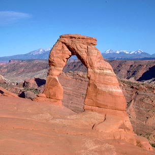
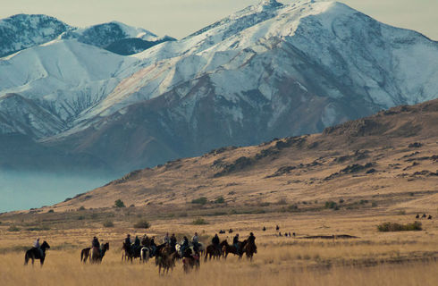
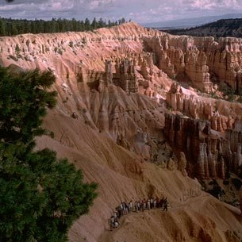
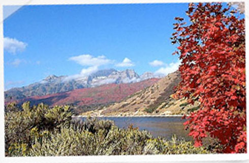
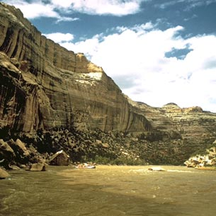
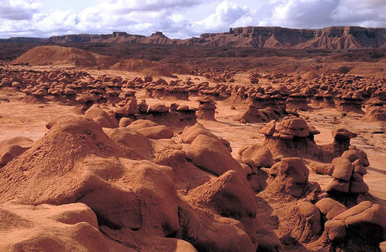
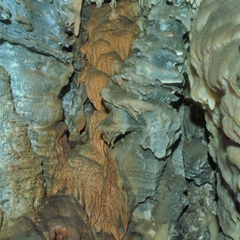
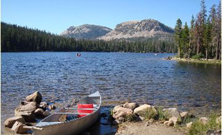
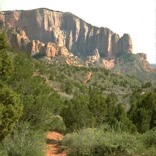

Arches National Park

The largest concentration of natural stone arches in the world is found in Arches National Park. Over 2,000 of these "miracles of nature" grace the 119 square- mile area. A 48-mile round-trip paved road in the park leads to the major sights while other arches are accessible via hiking trails. A visitor center, 5 miles north of Moab just off US-191, is open year-round.
Antelope Island State Park

Antelope Island, the largest island in the Great Salt Lake, is accessed via a 7.2-mile causeway. Its 28,022 acres are home to a unique variety of wildlife. Also featured are 25 miles of backcounty trails for hiking, mountain biking, and horseback riding, a visitor center that's open year-round, and tours of the Fielding Garr Historic Ranch House. Facilities include RV and primitive camping, a beach picnic area, and marina. The causeway is 7 miles west of I-15 Exit #332 near Layton.
Bryce Canyon National Park

Delicately carved spires rise in brilliant color from the amphitheaters of this national park. Visitors may take a 37-mile round-trip drive to Bryce's most famous viewpoints or enjoy one of many walking and hiking trails along the rim or to the bottom of the canyon. Visitor center at the north end of the park open year-round.
Deer Creek State Park

Deer Creek State Park lies in the southwest corner of beautiful Heber Valley and consistently provides some of Utah's finest year-round fishing. Anglers fish for rainbow trout, brown trout, perch, large mouth bass, small mouth bass, and walleye. Beautiful Deer Creek reservoir is also extremely popular for boating, wind surfing, sunbathing, swimming, and sailboating.
Dinosaur National Monument

The largest quarry of Jurassic Period dinosaur bones ever discovered is on this site 20 miles east of Vernal. A year-round visitor center has been built over the quarry to protect the fossilized dinosaur bones. Dinosaur National Monument is also popular for whitewater rafting on the Green and Yampa Rivers.
Goblin Valley State Park

The vast landscape of sandstone goblins may have visitors wondering if they're on Mars or in Utah. Scores of intricately eroded creatures greet visitors to Goblin Valley. Hike among these rock formations and discover numerous haunting coves. Adjacent to the park, off-highway vehicle enthusiasts will find hundreds of miles of dirt roads to explore.
Timpanogos Cave National Monument

Helicites and anthodites are just a few of the many dazzling formations to be found within 3 spectacularly decorated caverns. The strenuous climb to the cave entrance, a hike gaining over 1,000 feet in elevation, offers incredible views of American Fork Canyon.
Uinta-Wasatch-Cache National Forest

The Uinta-Wasatch-Cache National Forest encompasses 1,300,000 acres of Utah's Wasatch Mountains. Scenic highways provide easy access to most of the forest's campgrounds, picnic areas, clear blue mountain lakes, rivers, and trails. Ski resorts located in this forest provide world-renowned downhill skiing.
Zion National Park

One of the nation's oldest national parks, Zion is a masterpiece carved from Navajo sandstone by wind, water, and time. Entrances to Zion are located 33 miles east of I-15, and 12 miles west of US 89. The Kolob Canyons section is accessible off I-15, 18 miles south of Cedar City. Visitor centers open year-round.